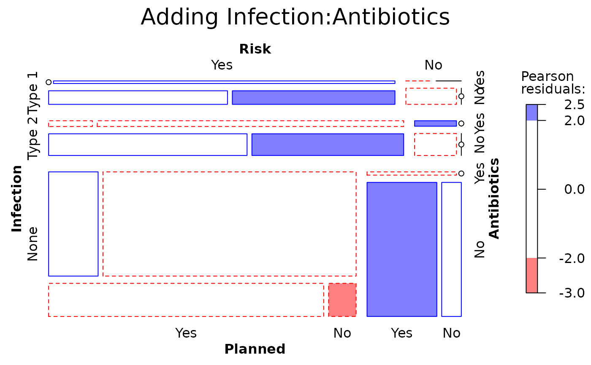

Data from infection from birth by Caesarian section, classified by
Risk (two levels), whether Antibiotics were used (two levels)
and whether the Caesarian section was Planned or not. The outcome is
Infection (three levels).
Format
A 4-dimensional array resulting from cross-tabulating 4 variables for 251 observations. The variable names and their levels are:
| dim | Name | Levels |
| 1 | Infection | "Type 1", "Type 2", "None" |
| 2 | Risk | "Yes", "No" (presence of risk factors) |
| 3 | Antibiotics | "Yes", "No" (were antibiotics given?) |
| 4 | Planned | "Yes", "No" (was the C section planned?) |
Source
% Fahrmeir:94 Fahrmeir, L. & Tutz, G. (1994). Multivariate Statistical Modelling Based on Generalized Linear Models New York: Springer Verlag, Table 1.1.
Details
Infection is regarded as the response variable here. There are quite
a few 0 cells here, particularly when Risk is absent and the
Caesarian section was unplanned. Should these be treated as structural or
sampling zeros?
See also
caesar for the same data recorded as a
frequency data frame with other variables.
Examples
data(Caesar)
#display table; note that there are quite a few 0 cells
structable(Caesar)
#> Risk Yes No
#> Planned Yes No Yes No
#> Infection Antibiotics
#> Type 1 Yes 0 4 0 0
#> No 11 10 4 0
#> Type 2 Yes 1 7 1 0
#> No 17 13 4 0
#> None Yes 17 87 1 0
#> No 30 3 32 9
require(MASS)
#> Loading required package: MASS
# baseline model, Infection as response
Caesar.mod0 <- loglm(~Infection + (Risk*Antibiotics*Planned),
data=Caesar)
# NB: Pearson chisq cannot be computed due to the 0 cells
Caesar.mod0
#> Call:
#> loglm(formula = ~Infection + (Risk * Antibiotics * Planned),
#> data = Caesar)
#>
#> Statistics:
#> X^2 df P(> X^2)
#> Likelihood Ratio 85.10955 14 3.156586e-12
#> Pearson NaN 14 NaN
mosaic(Caesar.mod0, main="Baseline model")
# Illustrate handling structural zeros
zeros <- 0+ (Caesar >0)
zeros[1,,1,1] <- 1
structable(zeros)
#> Risk Yes No
#> Planned Yes No Yes No
#> Infection Antibiotics
#> Type 1 Yes 1 1 1 0
#> No 1 1 1 0
#> Type 2 Yes 1 1 1 0
#> No 1 1 1 0
#> None Yes 1 1 1 0
#> No 1 1 1 1
# fit model excluding possible structural zeros
Caesar.mod0s <- loglm(~Infection + (Risk*Antibiotics*Planned),
data=Caesar,
start=zeros)
Caesar.mod0s
#> Call:
#> loglm(formula = ~Infection + (Risk * Antibiotics * Planned),
#> data = Caesar, start = zeros)
#>
#> Statistics:
#> X^2 df P(> X^2)
#> Likelihood Ratio 78.89068 9 2.683409e-13
#> Pearson 77.55728 9 4.931611e-13
anova(Caesar.mod0, Caesar.mod0s, test="Chisq")
#> LR tests for hierarchical log-linear models
#>
#> Model 1:
#> ~Infection + (Risk * Antibiotics * Planned)
#> Model 2:
#> ~Infection + (Risk * Antibiotics * Planned)
#>
#> Deviance df Delta(Dev) Delta(df) P(> Delta(Dev)
#> Model 1 85.10955 14
#> Model 2 78.89068 9 6.218866 5 0.2855
#> Saturated 0.00000 0 78.890682 9 0.0000
mosaic (Caesar.mod0s)
#> Error in eval(expr, p): object 'zeros' not found
# what terms to add?
add1(Caesar.mod0, ~.^2, test="Chisq")
#> Single term additions
#>
#> Model:
#> ~Infection + (Risk * Antibiotics * Planned)
#> Df AIC LRT Pr(>Chi)
#> <none> 105.110
#> Infection:Risk 2 104.932 4.178 0.1238
#> Infection:Antibiotics 2 72.187 36.922 9.603e-09 ***
#> Infection:Planned 2 107.742 1.368 0.5047
#> ---
#> Signif. codes: 0 '***' 0.001 '**' 0.01 '*' 0.05 '.' 0.1 ' ' 1
# add Association of Infection:Antibiotics
Caesar.mod1 <- update(Caesar.mod0, ~ . + Infection:Antibiotics)
anova(Caesar.mod0, Caesar.mod1, test="Chisq")
#> LR tests for hierarchical log-linear models
#>
#> Model 1:
#> ~Infection + (Risk * Antibiotics * Planned)
#> Model 2:
#> ~Infection + Risk + Antibiotics + Planned + Risk:Antibiotics + Risk:Planned + Antibiotics:Planned + Infection:Antibiotics + Risk:Antibiotics:Planned
#>
#> Deviance df Delta(Dev) Delta(df) P(> Delta(Dev)
#> Model 1 85.10955 14
#> Model 2 48.18709 12 36.92246 2 0
#> Saturated 0.00000 0 48.18709 12 0
mosaic(Caesar.mod1,
gp=shading_Friendly,
main="Adding Infection:Antibiotics")
